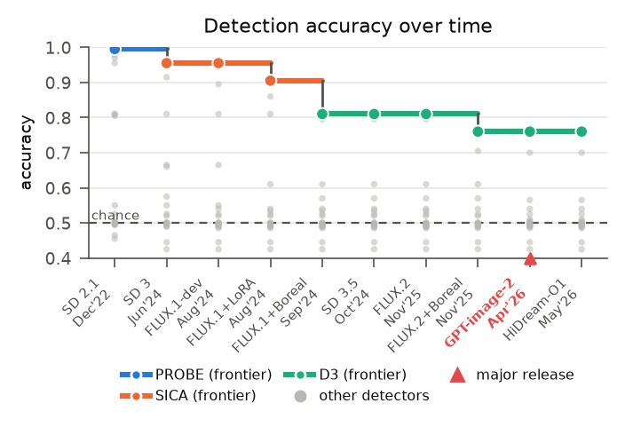
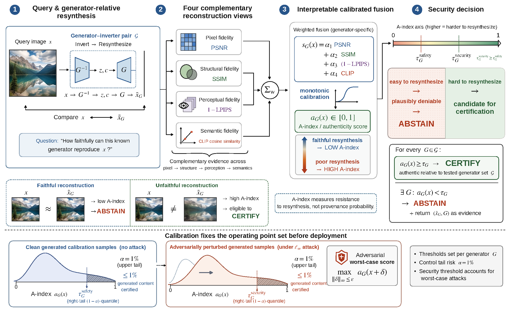
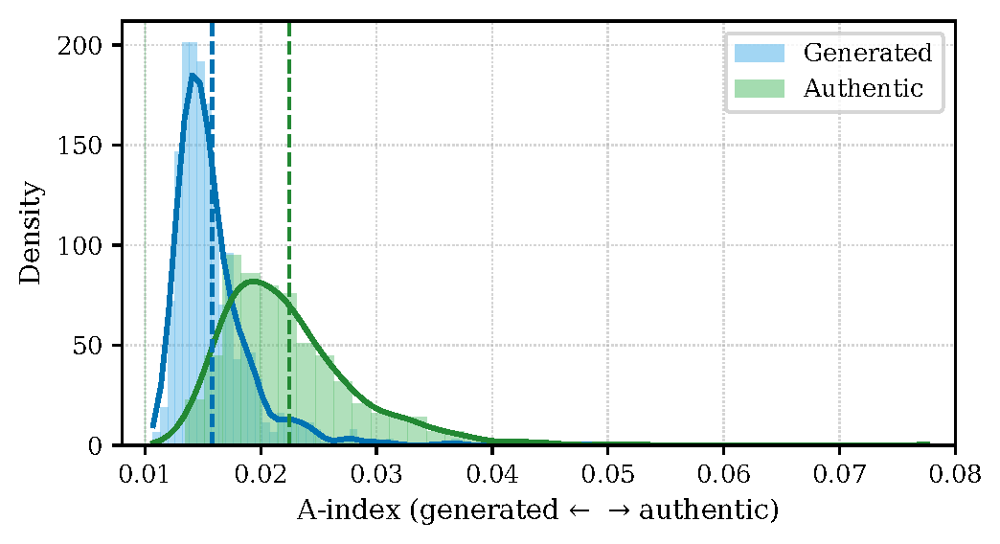
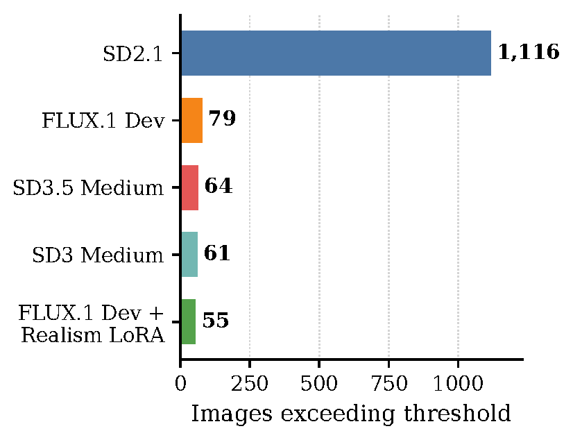

Abstract
A generator can reproduce authentic content, including through memorization. When authentic and generated images can be identical, image content alone cannot uniquely establish provenance. We therefore ask a narrower question: can a known generator faithfully reconstruct the query image?
If any tested generator can, synthetic provenance is plausible: the method abstains and returns the reconstruction as evidence. If none can, the method certifies the image as authentic relative to the tested generators, with a calibrated false-certification rate. Attack-aware calibration uses a stricter threshold for the evaluated bounded-perturbation setting.
We also evaluate 20 deepfake detectors against 10 generators released between December 2022 and May 2026, including white-box adversarial attacks, and find that binary detection degrades over time and collapses under bounded perturbations.
Key Findings
Best accuracy among twenty detectors across ten generators. The leading detector shifts from PROBE to SICA to D3.
Under an ℓ∞ attack with ε = 8/255, all twenty detectors fall below 2% accuracy; D3 retains the most at 1.75%.
At a 1% target false-certification rate our method still certifies authentic content, while most baselines have near-zero authentic recall.
Semantic transformations staying below the safety threshold. A best-of-100 PGD attacker moves the A-index only from 0.0148 to 0.0154.

Method
- Reconstruct. For each generator \(G\) in the tested set, use RF-Inversion to reconstruct the query image \(x\), producing \(\tilde{x}_G\).
- Score. Compare image and reconstruction with pixel fidelity (PSNR), structure (SSIM), perceptual similarity (\(1-\mathrm{LPIPS}\)) and semantics (CLIP), combined into the Authenticity Index (A-index).
- Calibrate and certify. Set each generator’s safety threshold to the \((1-\alpha)\)-quantile of A-index scores on held-out generated samples (\(\alpha = 0.01\)). Certify only when the A-index meets the threshold for every tested generator; otherwise abstain.
with \(\alpha_1 = -0.0181\), \(\alpha_2 = 1.380\), \(\alpha_3 = -4.058\), \(\alpha_4 = 8.066\) and \(\sigma = 0.9\). Faithful reconstructions receive low scores, making authenticity plausibly deniable. The security threshold applies the same quantile after attacking the calibration samples with ℓ∞-bounded PGD.


Safety thresholds
| Generator configuration | Threshold |
|---|---|
| SD2.1 | 0.015 |
| SD3 Medium | 0.0365 |
| SD3.5 Medium | 0.0365 |
| FLUX.1 Dev | 0.035 |
| FLUX.1 Dev + Realism LoRA | 0.038 |
Certification takes 11.67 s per image per generator on one NVIDIA RTX 5000 Ada.
Results
Adversarial robustness
White-box PGD with ε = 8/255 on 2,000 images (1,000 fake, 1,000 real, 512×512). Only samples classified correctly before the attack are perturbed.

| Detector | Acc. before (%) | Acc. after (%) | Attack success, fake (%) | Attack success, real (%) |
|---|---|---|---|---|
| OmniAID | 93.25 | 0.00 | 100.0 | 100.0 |
| D3 | 83.90 | 1.75 | 96.7 | 98.8 |
| SICA | 82.00 | 0.00 | 100.0 | 100.0 |
| AEROBLADE† | 77.80 | 1.50 | 100.0 | 96.1 |
| DDA | 77.55 | 0.20 | 100.0 | 99.6 |
| PROBE | 76.45 | 0.05 | 100.0 | 99.9 |
| DEAR | 70.50 | 0.00 | 100.0 | 100.0 |
| WaRPAD† | 68.90 | 0.75 | 97.8 | 100.0 |
Top eight of twenty detectors by pre-attack accuracy. † marks threshold-degenerate detectors. The full table is in the repository.
Social-media study
We apply five generator-specific thresholds to the same SD3 inversion scores of 3,000 unverified Reddit images: 1,116 exceed the SD2.1 threshold, against 55–79 for the four newer configurations.
These images are unverified; threshold exceedance does not establish their true provenance.

Preliminary video evaluation
On 100 videos from Deepfake-Eval-2024 (50 authentic, 50 generated), video detectors transfer poorly, while frame-aggregated A-index scores preserve the image-level ordering.
| Model | AUC | Prec. | Rec. | F1 |
|---|---|---|---|---|
| GenConViT | 0.615 | 0.59 | 0.49 | 0.53 |
| FTCN | 0.483 | 0.50 | 0.64 | 0.40 |
| StyleFlow | 0.509 | 0.53 | 0.42 | 0.47 |
Scope
- The false-certification rate concerns generated content incorrectly certified as authentic; it is distinct from classification accuracy and from the fraction of authentic images certified.
- Certification depends on the tested generators, inversion procedure and calibration setting, and does not establish provenance against every possible generator.
- The security evaluation covers bounded perturbations under the evaluated attack setting, not arbitrary adversarial transformations.
BibTeX
@article{hashmi2026certification,
title = {Certification of Real Images through Calibrated Content Authentication},
author = {Hashmi, Sarim and Elsayed, Abdelrahman and Alam, Mohammed Talha and Poppi, Samuele and Lukas, Nils},
journal = {arXiv preprint arXiv:2610.05870},
year = {2026},
eprint = {2610.05870},
archivePrefix = {arXiv},
url = {https://arxiv.org/abs/2610.05870}
}